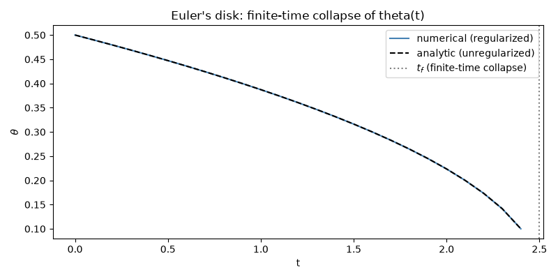

Note
Go to the end to download the full example code.
Euler’s Disk: a finite-time singularity on a tabletop#
Spin a disk and set it rolling flat on a table and it settles into a
shuddering near-steady state described, at each instant, by just its
inclination angle \(\theta\) (between the disk plane and the
table) and precession angle \(\phi\) (the azimuthal angle of the
rolling contact point). Its contact point precesses faster and
faster – the characteristic rattle rising in pitch – right up until the
disk suddenly stops: a finite-time singularity. Rather than committing
to one first-principles dissipation mechanism (viscous air drag vs.
rolling friction are both argued for in the literature; see the
history page), EulersDisk
uses a reduced phenomenological pair of ODEs,
in which both the precession rate and the (implied) dissipation rate diverge as \(\theta \to 0\), reproducing the same qualitative finite-time collapse. Ignoring the regularizing floor near \(\theta = 0\), the first equation integrates in closed form to \(\theta(t) = \sqrt{\theta_0^2 - 2\,\text{decay\_rate}\cdot t}\), vanishing at the finite collapse time \(t_f = \theta_0^2 / (2\,\text{decay\_rate})\).
import matplotlib.pyplot as plt
import numpy as np
from physicskit.classical.systems.rotations import EulersDisk, eulers_disk_theta_analytic
from physicskit.classical.visualizers.animations import animate_eulers_disk
theta0, decay_rate = 0.5, 0.05
t_f = theta0**2 / (2.0 * decay_rate)
system = EulersDisk(theta0=theta0, decay_rate=decay_rate, precession_const=1.5)
# Stop just short of the (regularized) collapse time -- theta keeps
# decreasing past zero once floored, which is no longer physically
# meaningful.
result = system.integrate((0.0, 0.98 * t_f), dt=1e-1, method="implicit_midpoint")
Animation: the contact point spiraling inward#
Watch the contact point spiral toward the center and precess faster and faster as theta collapses toward zero.
anim = animate_eulers_disk(system, result, interval=30, trail=600)
plt.show()
To save the animation to a file instead of (or in addition to) displaying it interactively, use e.g.:
anim.save("eulers_disk_animation.gif", writer="pillow", fps=30)
Numerical vs. analytic collapse#
The regularized numerical theta(t) tracks the exact, unregularized
closed-form solution theta(t) = sqrt(theta0^2 - 2*decay_rate*t)
almost all the way to the finite collapse time t_f.
theta_exact = eulers_disk_theta_analytic(result.t, theta0, decay_rate)
fig, ax = plt.subplots(figsize=(8, 4))
ax.plot(result.t, result.y[:, 0], label="numerical (regularized)", color="steelblue")
ax.plot(result.t, theta_exact, "k--", label="analytic (unregularized)")
ax.axvline(t_f, color="gray", ls=":", label=r"$t_f$ (finite-time collapse)")
ax.set_xlabel("t")
ax.set_ylabel(r"$\theta$")
ax.set_title("Euler's disk: finite-time collapse of theta(t)")
ax.legend()
fig.tight_layout()
plt.show()

Check#
Euler’s disk: theta(t) = theta0 sqrt(1 - t/t_f) collapses in the finite time t_f = theta0^2 / 2 c; the integration follows it.
assert np.max(np.abs(result.y[:, 0] - theta_exact)) < 1e-10
np.testing.assert_allclose(theta_exact, theta0 * np.sqrt(1 - result.t / t_f), rtol=1e-12)
Total running time of the script: (0 minutes 8.713 seconds)